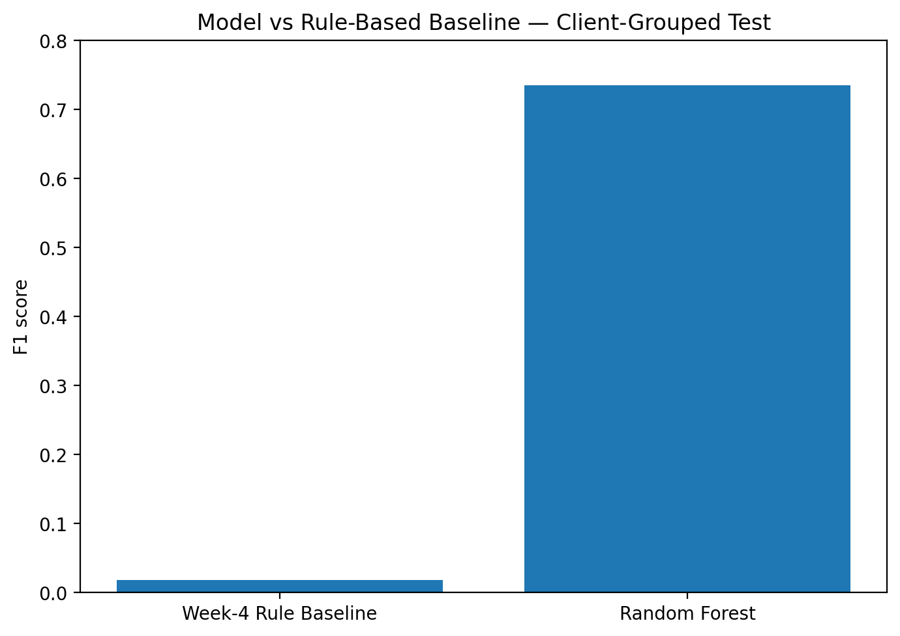
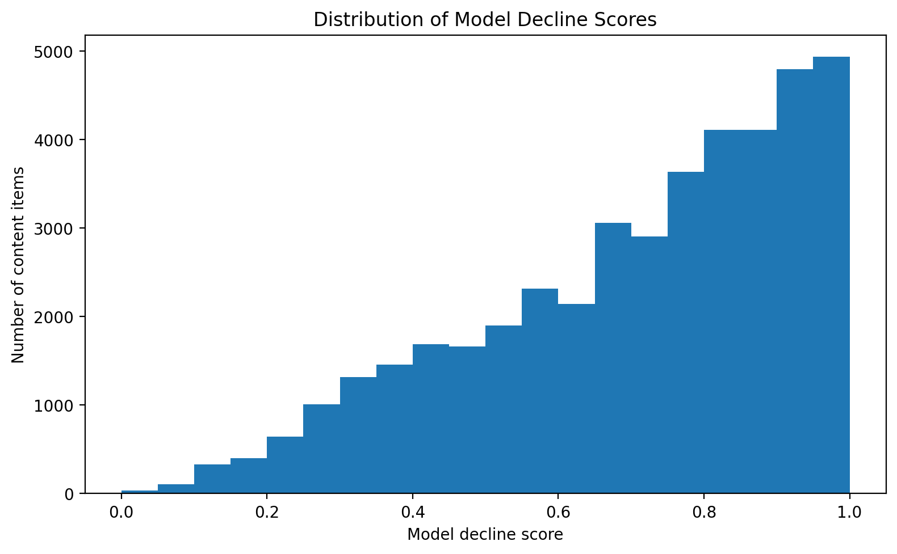

Author: Atul Patel
Lane: Machine Learning
Repo: FlyRank_ML_In
Date: August 2026
This study asks whether historical search-performance signals can help prioritize content that may warrant human review for declining organic search visibility. Using anonymized FlyRank ML Internship search-performance data, the analysis constructs previous-30-day impressions, clicks, and average-position features and defines an observed decline when subsequent 30-day impressions fall below 80% of the previous baseline. A Random Forest classifier was evaluated against a transparent Week-4 rule-based baseline using a client-grouped 75/25 validation split that prevents client overlap between training and test data. On this held-out split, the Random Forest measured an F1 score of 0.735 compared with 0.018 for the rule-based baseline, with measured precision of 0.670 and recall of 0.813. The resulting model output is treated as directional decision-support for prioritizing human content review, not as a causal prediction of future search performance or an automated recommendation to change content.
Can historical search-performance signals be used to prioritize content that may warrant human review for declining organic search visibility?
The unit of analysis is a client-content pair. The analysis produces a decline classification and ranking signal that can be used to prioritize which content should be reviewed first.
A FlyRank editor or SEO practitioner can use the ranked output to investigate high-priority content, review search intent and relevance, and decide whether to refresh, monitor, investigate further, or take no action.
Large content portfolios can contain many pages whose search performance changes over time. A transparent rule can identify some cases, but it may not prioritize observations consistently across different historical performance patterns.
The model provides a measured way to combine a small set of historical search-performance signals into a review-prioritization score. The purpose is therefore not to automate editorial decisions, but to reduce the amount of manual screening required before human review.
A false positive can cause an editor to spend time investigating content that does not require intervention. A false negative can cause potentially useful content to receive less attention than it otherwise would.
For this reason, the output is treated as decision-support, with human review required before any content action is taken.
The analysis uses the FlyRank ML Internship dataset from the FlyRank/internship-warehouse release, specifically the fact_content_daily_performance data.
The available source data spans 27 January 2025 through 30 June 2026 and contains approximately 78.8 million daily records across the available monthly files.
The analysis uses:
report_dateclient_hash_idcontent_hash_idgsc_impressionsgsc_clicksgsc_avg_positionThe final model features are previous-30-day impressions, clicks, and average position.
client_hash_id and content_hash_id are pseudonymous identifiers. They are used for grouping, joins, and validation only; they are not model features.
Label-derived fields such as trend_direction, trend_pct, or equivalent target-period outcomes are not used as model features because they could leak information about the outcome being predicted.
The model also does not use client names, URLs, private search queries, or other client-identifying information.
The decline label is based on the subsequent 30-day impression window, while model features are constructed from the preceding 30-day window.
The primary validation uses a client-grouped split, ensuring that no client appears in both the training and test sets. The resulting client overlap was 0.
Rows without positive previous-30-day impressions were excluded because a decline relative to a positive historical baseline cannot be meaningfully defined for those observations.
The underlying bulk dataset is not committed to the repository. Public outputs contain anonymized identifiers and aggregate/model results only. No client-identifying URLs, names, or private search queries are included in the research artifact.
The initial benchmark was a transparent rule-based classifier developed before the Random Forest model.
The rule flags an observation when all three conditions are met:
An observation satisfying all three conditions is classified as declining.
This baseline provides a simple, interpretable comparison because it uses the same historical performance signals as the model and requires no learned parameters.
The rule was evaluated on the same client-grouped test split used for the Random Forest:
| Model | Accuracy | Precision | Recall | F1 |
|---|---|---|---|---|
| Week-4 Rule Baseline | 0.346 | 0.517 | 0.009 | 0.018 |
| Random Forest | 0.616 | 0.670 | 0.813 | 0.735 |
The baseline therefore provides a transparent reference point for evaluating whether the learned model adds useful measured classification signal beyond the initial rule.
A Random Forest classifier was used to model the relationship between historical search-performance signals and the observed decline label.
The model uses three features, all calculated from the previous 30-day window:
| Feature | Description |
|---|---|
imp_prev30 |
Total Google Search Console impressions |
clk_prev30 |
Total Google Search Console clicks |
pos_prev30 |
Average Google Search Console position |
Client and content identifiers were deliberately excluded from the feature set. They are used only for grouping, traceability, and validation.
The target is defined as:
is_declining = 1 when imp_last30 < 0.8 × imp_prev30; otherwise 0.
This represents an observed 20% or greater reduction in impressions between the previous and most recent 30-day windows.
The Random Forest uses:
random_state = 42The model was selected as a practical nonlinear classifier that can capture interactions between the historical performance features without requiring a manually specified decision boundary.
The analysis assumes that historical impressions, clicks, and average position contain useful directional information for prioritizing content for review.
It does not assume that these features explain the cause of a decline, that the model represents a calibrated probability, or that a predicted decline implies a specific content intervention will be successful.
The primary evaluation uses a client-grouped 75/25 train-test split with random_state = 42.
The split produced:
This design is preferred over a simple row-level random split because observations from the same client can otherwise appear in both training and test data.
The full modeling dataset contains:
The majority-class rate is therefore approximately 71.5%. Accuracy should be interpreted alongside precision, recall, and F1 rather than on its own.
Both approaches were evaluated on the same client-grouped test observations:
| Model | Accuracy | Precision | Recall | F1 |
|---|---|---|---|---|
| Week-4 Rule Baseline | 0.346 | 0.517 | 0.009 | 0.018 |
| Random Forest | 0.616 | 0.670 | 0.813 | 0.735 |
The Random Forest measured substantially higher precision, recall, and F1 than the transparent rule-based baseline on this split.
Its accuracy of 0.616 is below the 71.5% majority-class rate, which is an important reason not to present accuracy alone as evidence of model quality. The F1 result provides a more useful view of the model's classification performance on the defined task.
On the 42,558-observation client-grouped test set, the Random Forest produced:
| Outcome | Count |
|---|---|
| Correct classifications | 26,216 |
| False positives | 11,133 |
| False negatives | 5,209 |
The larger number of false positives indicates that the model sometimes flags observations as declining when they do not match the defined decline label. In this decision-support setting, such errors primarily represent additional human-review effort.
False negatives are fewer but represent observations matching the decline label that the model did not identify. These cases illustrate why the ranked output should not be treated as a complete or guaranteed detection system.
The error analysis therefore supports using the model as a prioritization aid, with human review remaining necessary before any content action.
The client-grouped evaluation provides a more conservative assessment than the earlier row-level random split. The row-level split measured an F1 score of 0.781, while the client-grouped split measured 0.735.
This reduction is consistent with the stricter validation design and illustrates why the grouped result is used as the primary result in this paper.
The evaluation supports the conclusion that the Random Forest provides measured classification signal for the defined decline label under this validation setup. It does not establish future-period performance, causality, or guaranteed improvement from subsequent content actions.
The analysis suggests that recent historical search-performance signals contain useful directional information for distinguishing observations that match the defined decline label.
The Random Forest uses previous-30-day impressions, clicks, and average position jointly rather than relying on a single threshold. This allows the model to identify combinations of historical performance signals that the simple Week-4 rule does not capture.
The model's output is most useful as a prioritization signal. A higher decline score indicates that an observation is more strongly associated with the learned patterns corresponding to the defined decline label in the evaluation data.
The score should not be interpreted as a calibrated probability or as evidence that a particular page will definitely decline.
The Week-7 action playbook translates the model output into human-readable reason codes and content archetypes. Examples include:
These signals can help determine what should be investigated first, but they do not explain why a page's performance changed.
The analysis does not establish that any individual historical feature causes search-performance decline. It also does not establish that refreshing a page will reverse an observed decline.
The most defensible interpretation is therefore that the model provides a measured, directional signal for prioritizing human review under the tested validation design.
feature_importance = pd.DataFrame({ "Feature": feature_cols, "Importance": rf.feature_importances_ }).sort_values("Importance", ascending=False)
display(feature_importance.round(3))
plt.figure(figsize=(7, 5))
plt.bar( feature_importance["Feature"], feature_importance["Importance"] )
plt.ylabel("Feature importance") plt.xlabel("Feature") plt.title("Random Forest Feature Importance")
plt.tight_layout()
feature_importance_path = figures_dir / "capstone_feature_importance.png"
plt.savefig( feature_importance_path, dpi=200, bbox_inches="tight" )
plt.show()
print("Figure saved:", feature_importance_path)
The model output should be used as a ranked review queue, not as an automated content-decision system.
| Priority | Situation | Recommended action |
|---|---|---|
| 1 | High model risk + high visibility | Investigate first and preserve valuable existing content before changes. |
| 2 | High model risk + weaker position | Review search intent, relevance, and on-page coverage. |
| 3 | High model risk + low prior visibility | Investigate search opportunity and business value before considering a refresh. |
| 4 | Established content with elevated model risk | Review recent performance and relevance before deciding on intervention. |
A FlyRank editor could use the queue as follows:
The recommendations are directional decision-support signals based on measured historical patterns. They should not be interpreted as proof that a page needs a refresh or that a refresh will improve performance.
The model should not independently:
The practical value of the system is therefore in prioritizing human attention, while the final content decision remains with a qualified reviewer.
The analysis is organized as a sequence of research notebooks covering the progression from research question through validation and action recommendations.
The project environment is specified in requirements.txt. The analysis uses Python, DuckDB, pandas, NumPy, and scikit-learn.
The primary model evaluation uses random_state = 42 and a 75/25 client-grouped split.
The analysis references the FlyRank ML Internship dataset rather than committing the underlying bulk data to the repository.
The capstone notebook contains the feature construction, target definition, validation split, model training, baseline comparison, and artifact-generation steps needed to reproduce the reported results.
The complete research workflow and supporting artifacts are available in the FlyRank_ML_In GitHub repository.

